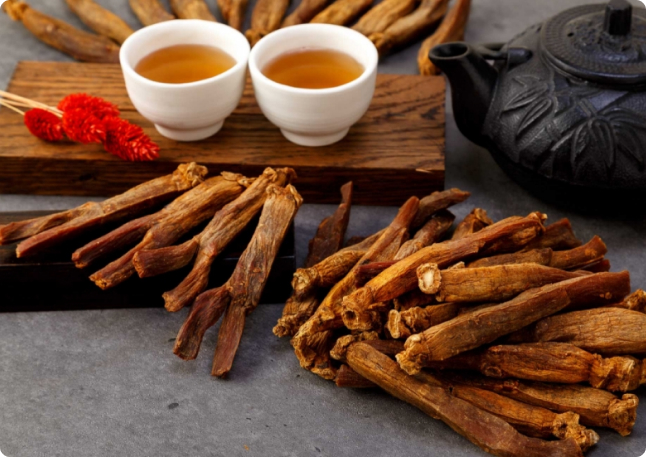

Qizil jenshen bilan oddiy jenshenni farqi,yetishtirilishi. Jenshen mahsulotini ekishdan oldin ekin maydoni 2 yil og'itlar bilan sugorilib tayyorlanadi. 3-yili esa yerga jenshen 2 xil usulda ekiladi,1-jenshen niholini donalab ekish(koreada asosan shu usuldan foydalaniladi),2- urugni sepish orqali. Yerga jenshen ekilgandan song, 1 ~ 8 yil davomida jenshen turli og'itlar bilan sugorilib katta qilinadi.(jenshen yerda qancha turganiga qarab oshancha yillik jenshen deb nomlanadi). Yerdan yangi uzilgan 1~8 yillik ho'l jenshen(koreyschada insam인삼,susam수삼 deb nomlanadi)bu oddiy jenshen hisoblanadi(lekin buniham foydali hususiyatlari juda kop. Giyohlar ichida qizil jenshendan song birinchi orinda turadi)

Qizil jenshen bilan oddiy jenshenni farqi,yetishtirilishi. Jenshen mahsulotini ekishdan oldin ekin maydoni 2 yil og'itlar bilan sugorilib tayyorlanadi. 3-yili esa yerga jenshen 2 xil usulda ekiladi,1-jenshen niholini donalab ekish(koreada asosan shu usuldan foydalaniladi),2- urugni sepish orqali. Yerga jenshen ekilgandan song, 1 ~ 8 yil davomida jenshen turli og'itlar bilan sugorilib katta qilinadi.(jenshen yerda qancha turganiga qarab oshancha yillik jenshen deb nomlanadi). Yerdan yangi uzilgan 1~8 yillik ho'l jenshen(koreyschada insam인삼,susam수삼 deb nomlanadi)bu oddiy jenshen hisoblanadi(lekin buniham foydali hususiyatlari juda kop. Giyohlar ichida qizil jenshendan song birinchi orinda turadi)
Kompaniya haqida
"Soosum" kompaniyasi 2021-yildan boshlab uzoq sharq o’simligi bo’lgan “Jenshen”ning ildizidan tayyorlangan ichimlikni ishlab chiqarib, O’zbekiston bo’ylab yetkazib berishni yo’lga qo’ydi. Kompaniyamiz Koreyaning "Chejun" ITD hamda Qizil Jenshen sharbati MChJ korxonalari bilan hamkorlikda ishlaydi. "Sunmee" qizil jenshen ildizi Janubiy Koreyada yetishtirilib O’zbekistonda qadoqlanadi.
Koreya qizil jensheni ichimligini kimlar
iste'mol qiladilar?
O’zida doimiy charchoq va
holsizlik xis qiladiganlarJinsiy quvvati kamligidan
aziyat chekadiganlarSaraton kasalligini oldini
olishni istaganlarQarilikni sekinlashtirishni
istaganlarAqliy va jismoniy
faoliyati pasayganlarTana va bo’g’imlarda doimiy
og’riq xis qiladiganlarBemorlikdan keyin oyoqqa
tezroq turishni xohlaganlar
Qizil jenshen ildizi ichimligidan
qanday foydalaniladi?
Qizil jenshen bilan oddiy jenshenni farqi,yetishtirilishi. Jenshen mahsulotini ekishdan oldin ekin maydoni 2 yil og'itlar bilan sugorilib tayyorlanadi. 3-yili esa yerga jenshen 2 xil usulda ekiladi,1-jenshen niholini donalab ekish(koreada asosan shu usuldan foydalaniladi),2- urugni sepish orqali. Yerga jenshen ekilgandan song, 1 ~ 8 yil davomida jenshen turli og'itlar bilan sugorilib katta qilinadi.(jenshen yerda qancha turganiga qarab oshancha yillik jenshen deb nomlanadi). Yerdan yangi uzilgan 1~8 yillik ho'l jenshen(koreyschada insam인삼,susam수삼 deb nomlanadi)...*rasm qo'y* bu oddiy jenshen hisoblanadi(lekin buniham foydali hususiyatlari juda kop. Giyohlar ichida qizil jenshendan song birinchi orinda turadi). Yerdan yangi uzilgan 1~8 yillik jenshenni zavodda yuvib tozalab ortiqcha shoxlarini qirqib, zavoddagi mahsus bosimli quritish tehnologiyasida quritilgan jenshen( quritilgan jenshen koreyschada 홍삼 xo'ngsam deb ataladi, quriganida qizil tusga kiradi va foydali hususiyatlari yanada ortadi, shuning uchunham bunga yetadigan giyoh yoq va dunyoda giyohlar qiroli hisoblanadi)* rasm qo'y*qizil jenshen deb ataladi.